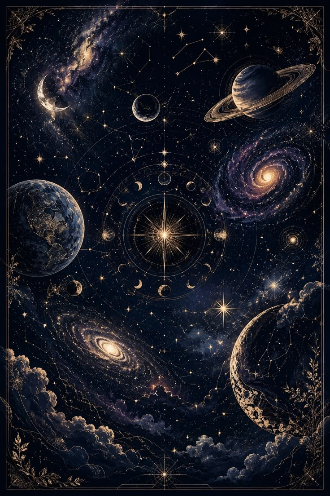

|
FENOMENOS COSMICOS |
||
|---|---|---|
| 1. Luz Antigua | Radiacion de fondo | Es la luz más vieja del universo. |
| Velocidad de la luz | Tarda 8 min en llegar del Sol a la Tierra. | |
| 2. Gravedad Extrema | Agujeros Negros | Nada puede escapar de su atracción. |
| Estrellas de neutrones | Una cucharadita pesa millones de toneladas. | |
Un agujero negro supermasivo llamado Sagitario con una masa equivalente a millones de soles.
Se conoce como la Paradoja de Olbers el universo es finito y se expande, por lo que la luz lejana aun no llega.
Solo un 5% es materia ordinaria; el resto es materia oscura 27% y energa oscura 68%.
Estadisticamente es probable debido a la inmensidad del cosmos, aunque las distancias impiden alcanzarlo.
